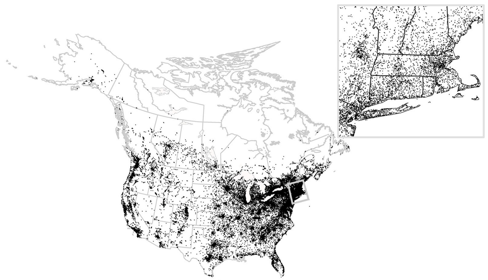

Overview
PFW is an R package designed for easy filtering, preparation, and management of data from Project FeederWatch. Project FeederWatch is a community-driven project initiated in the 1980s and run by the Cornell Lab of Ornithology and Birds Canada that compiles bird observations from thousands of “backyards, nature centers, community areas, and other locales” across North America. Project FeederWatch data is easy to access, but can often be tricky to work with; PFW serves to simplify and streamline the use of this data. Included in PFW are tools for taxonomic rollup, filtering by survey characteristics (species, state, etc.), merging in site metadata, and zerofilling for presence/absence modeling.

Figure from Bonter & Greig (2021), licensed under CC BY 4.0.
Vignette
Background and details on using PFW to filter and process Project FeederWatch data are outlined in the vignette.
Citation
To cite PFW in publications, use:
Maron, M. W. (2025). PFW: Filtering and Processing Data from Project FeederWatch.
R package version 0.1.0. https://github.com/ropensci/PFW
You can also run
citation("PFW")in R when PFW is loaded.
Quick Start
This is a simple example which shows you how to do basic Project FeederWatch importing, filtering, zerofilling, and site data attachment. Here, we’ll load the example dataset and filter it for Song Sparrow, Dark-eyed Junco, and Spotted Towhee from Washington and Oregon between 2022 and 2024 in November-February. Then, we’ll zerofill that data and attach our site metadata:
library(PFW)
# Load in the included example dataset
data <- pfw_example # If you were using your own selection of PFW data,
# this would be pfw_import() instead.
# pfw_import() creates and defaults to "/data-raw" in a local directory,
# but will accept a different filepath.
# Create a list of study species
species_list <- c("Song Sparrow", "Dark-eyed Junco", "Spotted Towhee")
# Create a list of study regions
region_list <- c("Washington", "Oregon")
# Filter data by species and region, from 2022–2024 during November-February
data_filtered <- pfw_filter(data,
region = region_list,
species = species_list,
year = 2022:2024,
month = 11:2, # pfw_date(), which is called within pfw_filter(),
# will appropriately wrap this around the end of the year.
valid = TRUE, # TRUE by default
rollup = TRUE # TRUE by default
)
# Output:
# 2 regions successfully filtered.
# Date filtering complete.
# Species roll-up complete. 36 ambiguous records removed.
# 3 species successfully filtered.
# Filtering complete. 23538 records remaining.
# View the filters that were applied
pfw_attr(data_filtered)
# Output:
# Filters applied to this dataset:
#
# - Filter type: region
# Values: Washington, Oregon
#
# - Filter type: date
# year : 2022, 2023, 2024
# month : 11, 12, 1, 2
#
# - Filter type: rollup
# Values: TRUE
#
# - Filter type: valid
# Values: TRUE
#
# - Filter type: species
# Values: song sparrow, dark-eyed junco, spotted towhee
# Zerofill missing species/survey instance combos
data_zf <- pfw_zerofill(data_filtered)
# Attach site description metadata
# Replace "path/sitedata.csv" with the actual path to the downloaded file
data_full <- pfw_sitedata(data_zf, path = "path/sitedata.csv")
# If the file does not exist at that path, pfw_sitedata will
# download it there from the Project FeederWatch website.
# Alternatively, you can manually download the site description file from:
# https://feederwatch.org/explore/raw-dataset-requests/Feedback
Have feedback? Please submit any bugs, typos, or improvements as an issue or as a pull request! Your insights help improve PFW.
Please note that PFW is released with a Contributor Code of Conduct. By contributing to this project, you agree to abide by its terms.
Acknowledgements
PFW was built from code originally developed for Project FeederWatch data preparation in Maron et al. (2025). While the function scripts in this package were created specifically for PFW, the code they are based on benefited greatly from examples and code snippets provided by Emma Greig, who passed away prior to the package’s creation.